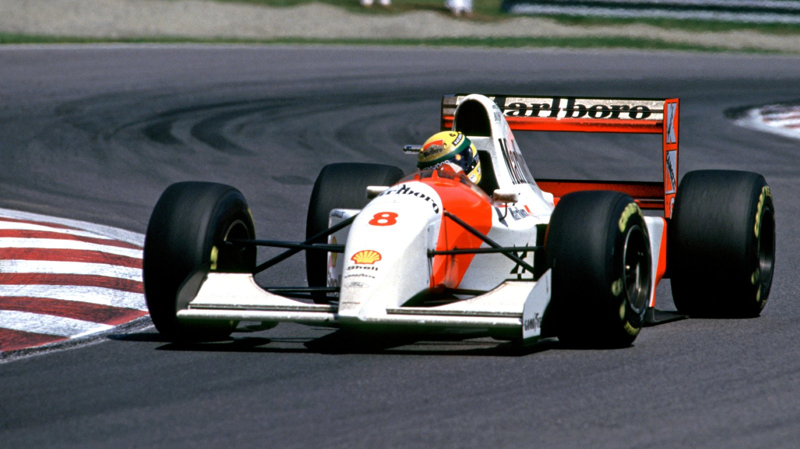

AYRTON SENNA
Ayrton Senna è considerato uno dei più grandi piloti nella storia della Formula 1. Nato il 21 marzo 1960 a San Paolo, in Brasile, ha vinto tre titoli mondiali con la McLaren nel 1988, 1990 e 1991. Senna era noto per la sua velocità straordinaria, la sua abilità nel guidare in condizioni di bagnato e il suo intenso spirito competitivo. La sua rivalità con Alain Prost è diventata leggendaria, culminando in incidenti memorabili in pista. Purtroppo, la carriera di Senna è stata tragicamente interrotta da un incidente mortale durante il Gran Premio di San Marino nel 1994. La sua eredità vive ancora oggi, e è ricordato come un pioniere della sicurezza nella Formula 1.
